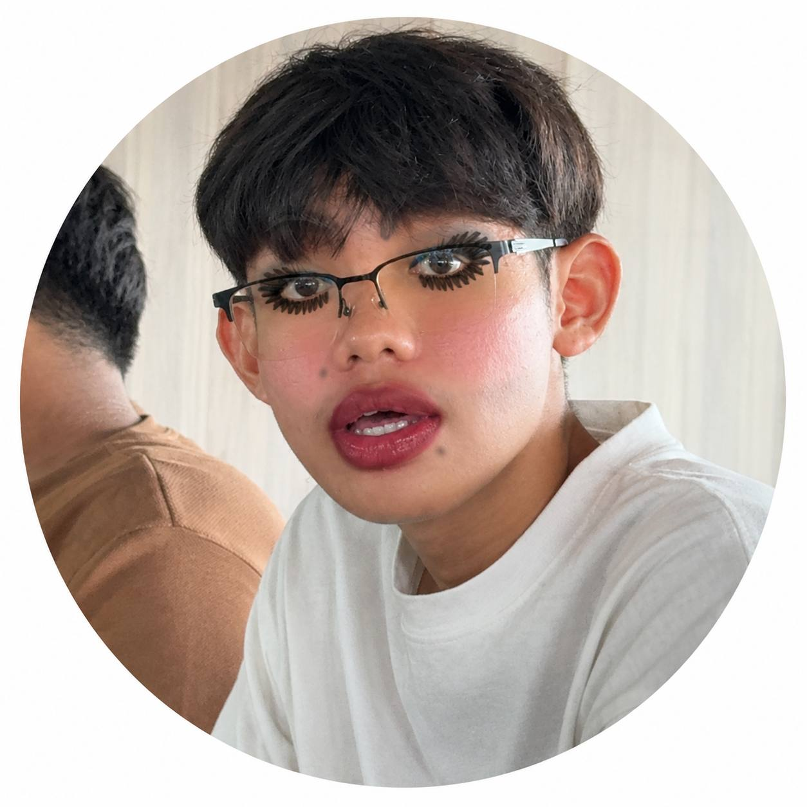

more_vert

Theng Lisinh
King of UX/UI design
| Projects | Following | Followers |
|---|---|---|
| 99+ | 01 | 999M |
Lisinh has a golden heart, a beautiful soul, and a smile that can brighten any day. He brings happiness to the people around him and makes ordinary moments feel special. A people like Lisinh is truly a treasure, rare to find and impossible to replace.